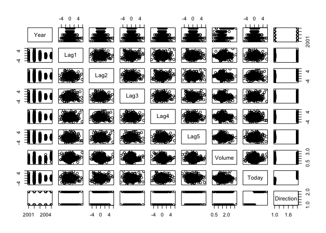
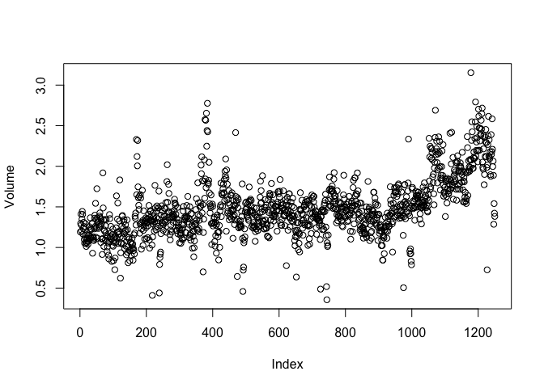
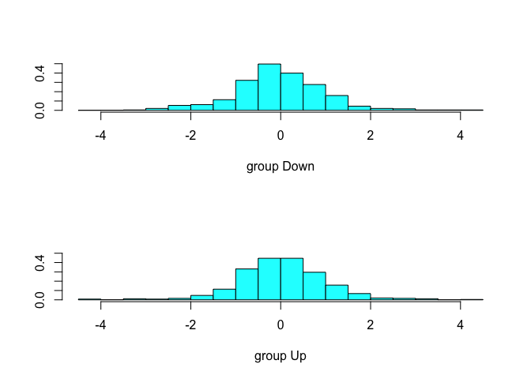

Start by loading that ISLR package and attach to the Smarket dataset that we will be using throughtout this exercise.
library(ISLR)
attach(Smarket)
names(Smarket)
## [1] "Year" "Lag1" "Lag2" "Lag3" "Lag4" "Lag5"
## [7] "Volume" "Today" "Direction"
pairs(Smarket)

The cor() function is used to show a matrix of all pairwise correlations among the predictors in the Smarket dataset.
cor(Smarket[, -9])
## Year Lag1 Lag2 Lag3 Lag4
## Year 1.00000000 0.029699649 0.030596422 0.033194581 0.035688718
## Lag1 0.02969965 1.000000000 -0.026294328 -0.010803402 -0.002985911
## Lag2 0.03059642 -0.026294328 1.000000000 -0.025896670 -0.010853533
## Lag3 0.03319458 -0.010803402 -0.025896670 1.000000000 -0.024051036
## Lag4 0.03568872 -0.002985911 -0.010853533 -0.024051036 1.000000000
## Lag5 0.02978799 -0.005674606 -0.003557949 -0.018808338 -0.027083641
## Volume 0.53900647 0.040909908 -0.043383215 -0.041823686 -0.048414246
## Today 0.03009523 -0.026155045 -0.010250033 -0.002447647 -0.006899527
## Lag5 Volume Today
## Year 0.029787995 0.53900647 0.030095229
## Lag1 -0.005674606 0.04090991 -0.026155045
## Lag2 -0.003557949 -0.04338321 -0.010250033
## Lag3 -0.018808338 -0.04182369 -0.002447647
## Lag4 -0.027083641 -0.04841425 -0.006899527
## Lag5 1.000000000 -0.02200231 -0.034860083
## Volume -0.022002315 1.00000000 0.014591823
## Today -0.034860083 0.01459182 1.000000000
Use the plot() function to produce a scatter plot or the variable Volume.
plot(Volume)

The glm() function can be used to fit a logistic regression model by specifying family=binomial.
glm.fit <- glm(Direction ~ Lag1 + Lag2 + Lag3 + Lag4 + Lag5 + Volume, data = Smarket, family = binomial)
summary(glm.fit)
##
## Call:
## glm(formula = Direction ~ Lag1 + Lag2 + Lag3 + Lag4 + Lag5 +
## Volume, family = binomial, data = Smarket)
##
## Deviance Residuals:
## Min 1Q Median 3Q Max
## -1.446 -1.203 1.065 1.145 1.326
##
## Coefficients:
## Estimate Std. Error z value Pr(>|z|)
## (Intercept) -0.126000 0.240736 -0.523 0.601
## Lag1 -0.073074 0.050167 -1.457 0.145
## Lag2 -0.042301 0.050086 -0.845 0.398
## Lag3 0.011085 0.049939 0.222 0.824
## Lag4 0.009359 0.049974 0.187 0.851
## Lag5 0.010313 0.049511 0.208 0.835
## Volume 0.135441 0.158360 0.855 0.392
##
## (Dispersion parameter for binomial family taken to be 1)
##
## Null deviance: 1731.2 on 1249 degrees of freedom
## Residual deviance: 1727.6 on 1243 degrees of freedom
## AIC: 1741.6
##
## Number of Fisher Scoring iterations: 3
Similar to linear models estimated with the lm(), the logistic regression model fitted with glm() can be examined with the summary() and coef()
coef(glm.fit)
## (Intercept) Lag1 Lag2 Lag3 Lag4
## -0.126000257 -0.073073746 -0.042301344 0.011085108 0.009358938
## Lag5 Volume
## 0.010313068 0.135440659
summary(glm.fit)$coef
## Estimate Std. Error z value Pr(>|z|)
## (Intercept) -0.126000257 0.24073574 -0.5233966 0.6006983
## Lag1 -0.073073746 0.05016739 -1.4565986 0.1452272
## Lag2 -0.042301344 0.05008605 -0.8445733 0.3983491
## Lag3 0.011085108 0.04993854 0.2219750 0.8243333
## Lag4 0.009358938 0.04997413 0.1872757 0.8514445
## Lag5 0.010313068 0.04951146 0.2082966 0.8349974
## Volume 0.135440659 0.15835970 0.8552723 0.3924004
summary(glm.fit)$coef[, 4]
## (Intercept) Lag1 Lag2 Lag3 Lag4 Lag5
## 0.6006983 0.1452272 0.3983491 0.8243333 0.8514445 0.8349974
## Volume
## 0.3924004
The predict() function is used similary to generate predictions for the response variable.
glm.probs <- predict(glm.fit, type = "response")
glm.probs[1:10]
## 1 2 3 4 5 6 7
## 0.5070841 0.4814679 0.4811388 0.5152224 0.5107812 0.5069565 0.4926509
## 8 9 10
## 0.5092292 0.5176135 0.4888378
Use the contrasts() function to see the dummy variables generated for values in the categorical variable Direction.
contrasts(Direction)
## Up
## Down 0
## Up 1
Next we convert the predicted probabilities to either "Up" or "Down" based on whether the probability is less than or greater than 0.5.
glm.pred <- rep("Down", 1250)
glm.pred[glm.probs > 0.5] <- "Up"
We can generate a confusion matrix between the predicted direction and the actual direction from the variable Direction using the table() function.
table(glm.pred, Direction)
## Direction
## glm.pred Down Up
## Down 145 141
## Up 457 507
mean(glm.pred == Direction)
## [1] 0.5216
We then divide our dataset into training set and validation set. The training set will include observations from 2001-2004 and the validation set from the year 2005.
train <- (Year < 2005)
Smarket.2005= Smarket [! train ,]
dim(Smarket.2005)
## [1] 252 9
Direction.2005=Direction[!train]
We can run the loggistic regression again using glm() but this time restricting our training set to obervations in the subset train.
glm.fit <- glm(Direction ~ Lag1 + Lag2 + Lag3 + Lag4 + Lag5 + Volume, data = Smarket, family = binomial, subset = train)
glm.probs <- predict(glm.fit, Smarket.2005, type = "response")
Next we compare the predictions for 2005 based on the model generated from our train subset.
glm.pred <- rep("Down", 252)
glm.pred[glm.probs > 0.5] <- "Up"
table(glm.pred, Direction.2005)
## Direction.2005
## glm.pred Down Up
## Down 77 97
## Up 34 44
mean(glm.pred == Direction.2005)
## [1] 0.4801587
mean(glm.pred != Direction.2005)
## [1] 0.5198413
To improve the preditive performance, we can restrict the predictor variables to only those with the strongest relationship to the response variable. In this case, we limit the variables to Lag1 and Lag2.
glm.fit <- glm(Direction ~ Lag1 + Lag2, data = Smarket, family = binomial, subset = train)
glm.probs <- predict(glm.fit, Smarket.2005, type = "response")
glm.pred <- rep("Down", 252)
glm.pred[glm.probs > 0.5] <- "Up"
table(glm.pred, Direction.2005)
## Direction.2005
## glm.pred Down Up
## Down 35 35
## Up 76 106
mean(glm.pred == Direction.2005)
## [1] 0.5595238
predict(glm.fit,newdata=data.frame(Lag1=c(1.2,1.5), Lag2=c(1.1,-0.8)),type="response")
## 1 2
## 0.4791462 0.4960939
Let's first load the MASS package so we can train an LDA model with the lda() function.
library(MASS)
lda.fit <- lda(Direction ~ Lag1 + Lag2, data = Smarket, subset = train)
plot(lda.fit)

The preditc() function for an LDA model returns a list of three elements representing the predicted class, the posterior probabilities and the linear discriminants as shown below.
lda.pred <- predict(lda.fit, Smarket.2005)
names(lda.pred)
## [1] "class" "posterior" "x"
We can compare the predicted class with the predicted directed obtained from logistic regression in the previous section and stored in the vector Direction.2005.
lda.class <- lda.pred$class
table(lda.class, Direction.2005)
## Direction.2005
## lda.class Down Up
## Down 35 35
## Up 76 106
mean(lda.class == Direction.2005)
## [1] 0.5595238
sum(lda.pred$posterior[, 1] >= 0.5)
## [1] 70
sum(lda.pred$posterior[, 1] < 0.5)
## [1] 182
We can inspect the posterior probabilities of the LDA model from the posterior vector of the fitted model.
lda.pred$posterior[1:20, 1]
## 999 1000 1001 1002 1003 1004 1005
## 0.4901792 0.4792185 0.4668185 0.4740011 0.4927877 0.4938562 0.4951016
## 1006 1007 1008 1009 1010 1011 1012
## 0.4872861 0.4907013 0.4844026 0.4906963 0.5119988 0.4895152 0.4706761
## 1013 1014 1015 1016 1017 1018
## 0.4744593 0.4799583 0.4935775 0.5030894 0.4978806 0.4886331
lda.class[1:20]
## [1] Up Up Up Up Up Up Up Up Up Up Up Down Up Up
## [15] Up Up Up Down Up Up
## Levels: Down Up
We can also set the posterior probabilities to different thresholds for making predictions.
sum(lda.pred$posterior[, 1] > 0.9)
## [1] 0
In addition to Linear Discriminant Analysis (LDA), the MASS package also offers a Quadratic Discriminant Analysis (LDA) model that we can fit with the qda() function.
qda.fit <- qda(Direction ~ Lag1 + Lag2, data = Smarket, subset = train)
qda.fit
## Call:
## qda(Direction ~ Lag1 + Lag2, data = Smarket, subset = train)
##
## Prior probabilities of groups:
## Down Up
## 0.491984 0.508016
##
## Group means:
## Lag1 Lag2
## Down 0.04279022 0.03389409
## Up -0.03954635 -0.03132544
We can make predictions using predict() just as we did for an LDA model and compare them to the results from the logistic regression.
qda.class <- predict(qda.fit, Smarket.2005)$class
table(qda.class, Direction.2005)
## Direction.2005
## qda.class Down Up
## Down 30 20
## Up 81 121
mean(qda.class == Direction.2005)
## [1] 0.5992063
The class package offers a number of classification algorithms including K-Nearest Neighbors. Before we can run the KNN algorithm, we need to split our dataset into training and test subsets. After splitting the dataset, the cbind() is used to bind the Lag1 and Lag2 variables into a matrix for each subset.
library(class)
train.X <- cbind(Lag1, Lag2)[train, ]
test.X <- cbind(Lag1, Lag2)[!train, ]
train.Direction <- Direction[train]
We initialize the random number generator with set.seed() to ensure that repeated runs produce consistent results and then use knn() to make predictions about the market direction in 2005.
set.seed(1)
knn.pred <- knn(train.X, test.X, train.Direction, k = 1)
table(knn.pred, Direction.2005)
## Direction.2005
## knn.pred Down Up
## Down 43 58
## Up 68 83
(83 + 43)/252
## [1] 0.5
We can repeat the fit with K = 3.
knn.pred <- knn(train.X, test.X, train.Direction, k = 3)
table(knn.pred, Direction.2005)
## Direction.2005
## knn.pred Down Up
## Down 48 54
## Up 63 87
mean(knn.pred == Direction.2005)
## [1] 0.5357143
We first use the attach() function to make the Caravan dataset available to us.
attach(Caravan)
Lets explore the dataset with the dim() and summary() functions.
dim(Caravan)
## [1] 5822 86
summary(Purchase)
## No Yes
## 5474 348
348/5822
## [1] 0.05977327
We use the scale() function to scale the dataset with a mean of zero and standard deviation of one.
standardized.X <- scale(Caravan[, -86])
var(Caravan[, 1])
## [1] 165.0378
var(Caravan[, 2])
## [1] 0.1647078
var(standardized.X[, 1])
## [1] 1
var(standardized.X[, 2])
## [1] 1
We use the producedure described in the previous section of splitting the dataset into training and test sets and making prediction about the response variable Purchase using a KNN model.
test <- 1:1000
train.X <- standardized.X[-test, ]
test.X <- standardized.X[test, ]
train.Y <- Purchase[-test]
test.Y <- Purchase[test]
set.seed(1)
knn.pred <- knn(train.X, test.X, train.Y, k = 1)
mean(test.Y != knn.pred)
## [1] 0.118
mean(test.Y != "No")
## [1] 0.059
table(knn.pred, test.Y)
## test.Y
## knn.pred No Yes
## No 873 50
## Yes 68 9
9/(68 + 9)
## [1] 0.1168831
We can repeat this process with different values of K, for example, K = 3 and K = 5.
knn.pred <- knn(train.X, test.X, train.Y, k = 3)
table(knn.pred, test.Y)
## test.Y
## knn.pred No Yes
## No 920 54
## Yes 21 5
5/26
## [1] 0.1923077
knn.pred <- knn(train.X, test.X, train.Y, k = 5)
table(knn.pred, test.Y)
## test.Y
## knn.pred No Yes
## No 930 55
## Yes 11 4
4/15
## [1] 0.2666667
Finally, we compare the KNN model with a logistic regression using glm() and family = binomial.
glm.fit <- glm(Purchase ~ ., data = Caravan, family = binomial, subset = -test)
## Warning: glm.fit: fitted probabilities numerically 0 or 1 occurred
glm.probs <- predict(glm.fit, Caravan[test, ], type = "response")
glm.pred <- rep("No", 1000)
glm.pred[glm.probs > 0.5] <- "Yes"
table(glm.pred, test.Y)
## test.Y
## glm.pred No Yes
## No 934 59
## Yes 7 0
glm.pred <- rep("No", 1000)
glm.pred[glm.probs > 0.25] <- " Yes"
table(glm.pred, test.Y)
## test.Y
## glm.pred No Yes
## Yes 22 11
## No 919 48
11/(22 + 11)
## [1] 0.3333333